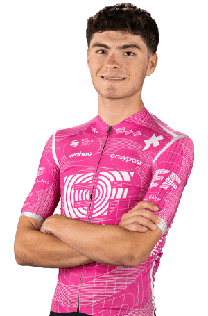

Markel Beloki
Datos personales
- Nombre completo: Markel Beloki Fernández
- Fecha de nacimiento: 27/07/2005
- País de nacimiento: España
- Equipo: EF Education-EasyPost
- Dorsal: 163

Datos de equipos
- EF Education - EasyPost (2024-2026)
- MMR Academy (2023)
Temporada 2025
| Nombre del Dato | Resultado |
|---|---|
| Carreras disputadas | En total 4 carreras: Tour Alsace, La Vuelta Ciclista a España, Tour of Austria y Settimana Internazionale Coppi e Bartali |
| Victorias de etapa | Una victoria en la tercera etapa del Tour Alsace |
| Victorias en clasificación general | Una victoria en clasificación general en el Tour Alsace |
| Podios conseguidos | 1º en el Tour Alsace |
| Maillots conseguidos | Maillot amarillo en la tercera etapa con final en el puerto de La Planche des Belles Filles y maillot azul al ser el mejor corredor sub-23 en el Tour de Alsace |
| Días de competición | 23 días |
Multimedia
Equipo EF Education-EasyPost en La Vuelta Ciclista a España 2026.